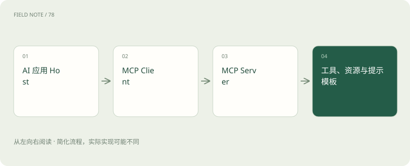

先读哪些知识
先用一个类比理解
API 像某台设备的操作面板；MCP 像统一接头；Skill 像操作手册。接头和手册都不会自动赋予使用设备的权限。
类比只帮助建立直觉，不等同于技术的完整机制。
一图看懂

API 是更广泛的接口概念
查天气、读取订单、调用模型都可以通过 API。MCP 不是用来替代所有 API，而是让 AI 应用以共同协议发现和使用外部能力；服务器背后仍可能调用普通业务 API。
MCP 的几个角色
Host 是承载 AI 功能的应用，Client 与 Server 建立协议连接。Server 可以暴露工具、资源和提示模板。各客户端支持范围、传输方式与协议版本可能不同，接入前应核对。
Skill 的含义取决于平台
很多工具把任务说明、脚本和参考资料打包为 Skill，指导助手如何完成某类工作。它不是一个能包办全部平台的统一执行协议。需要什么权限仍由应用和运行环境控制。
放进真实场景
SCENARIO
一个知识助手通过 MCP 连接文档服务，服务内部调用文档 API；另有“周报 Skill”规定摘要结构。这三层可以同时存在。
别踩这个误区
MCP 不保证工具可信，也不代表接上就能访问全部数据。外部内容中的指令仍应被当作不可信输入。
想一想
有了 MCP 就不需要 API 和权限验证了吗？
仍然需要。协议连接、业务接口和访问控制是不同职责。
关联阅读
资料与边界
本文为原创知识讲解。类比和图示经过简化；示例数字不代表实测或报价。整理日期：2026-11-04。文末列出对应技术的原始资料，具体功能与版本支持请以原文为准。
按完整目录逐篇阅读